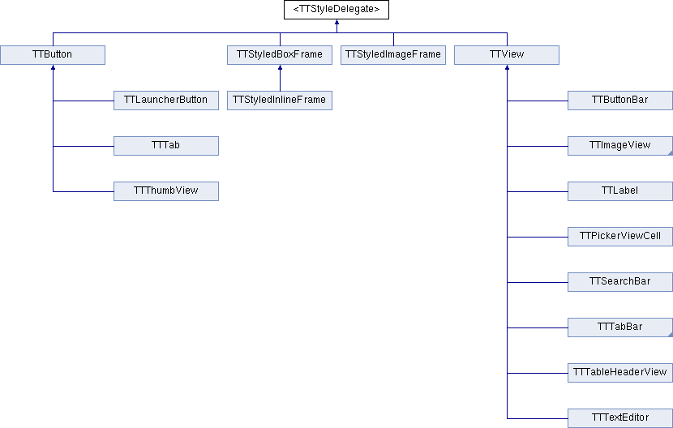

<TTStyleDelegate> Protocol Reference
Inheritance diagram for <TTStyleDelegate>:

Public Member Functions | |
| (NSString *) | - textForLayerWithStyle: |
| (UIImage *) | - imageForLayerWithStyle: |
| (void) | - drawLayer:withStyle: |
The documentation for this protocol was generated from the following file:
- Three20Style/Headers/TTStyleDelegate.h